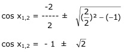
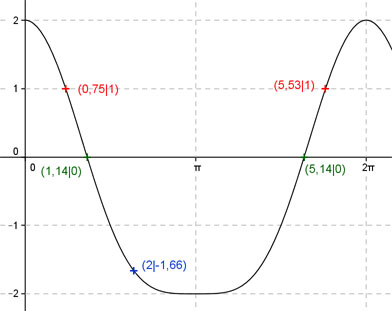
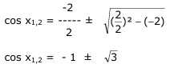

Aufgabe 232 Ergänzen Sie die Wertetabelle für x zwischen 0 und 2π: y = 2 * cos x - sin2 x x 2 0,75 oder 5,53 y -1,66 1 Amplitude = 2 (Berechnung siehe unten), Periode = 2π Berechnung der Nullstellen: 2 cos x - sin2 x = 0 mit sin2 x = 1 - cos2 x 2 cos x - (1 - cos2 x) = 0 2 cos x - 1 + cos2 x = 0 cos2 x + 2 cos x - 1 = 0 p = 2 ; q = -1  cos x1,2 = -1 ± 1,414 cos x1 = 0,414 --> arc cos 0,414 = 1,14 gerundet. cos x2 = -2,414 keine Lösung, cos x kann nicht kleiner als -1 sein. x2 = = 5,14 gerundet x1 = 1,14 oder 65°, x2 = (2π - 1,14) = 5,14 oder 294,5° gerundet. Berechnung der Amplitude A: Sie tritt an den Stellen 0, π oder 2π auf. Amplitude = |f(π)| = |2 cos π - sin2 π| = = |2 cos π - sin π * sin π| = |2 * (-1) - 0²| = 2  Funktionswert an einer Stelle x ermitteln: x = 2 f(2) = 2 cos 2 - sin2 2 = = 2 cos 114,6° - sin2 114,6° = -1,66 gerundet Berechnung der x-Werte für y = f(x) = 1 f(x) = 1 eingesetzt, existiert zwischen 0 und π bzw. 0° und 180° und zwischen π und 2π bzw. 180° und 360° (siehe Graph). 2 cos x - sin2 x = 1 mit sin2 x = 1 - cos2 x 2 cos x - (1 - cos2 x) = 1 2 cos x - 1 + cos2 x = 1 |-1 cos2 x + 2 cos x - 2 = 0 p = 2 ; q = -2  cos x1,2 = - 1 ± 1,732 cos x1 = 0,732 --> x1 = arc cos 0,732 = 0,75 oder 43° gerundet. cos x2 = -2,732 keine Lösung, cos x kann nicht kleiner als -1 sein. x2 = (2π - 0,75) = 5,53 oder 317° gerundet.